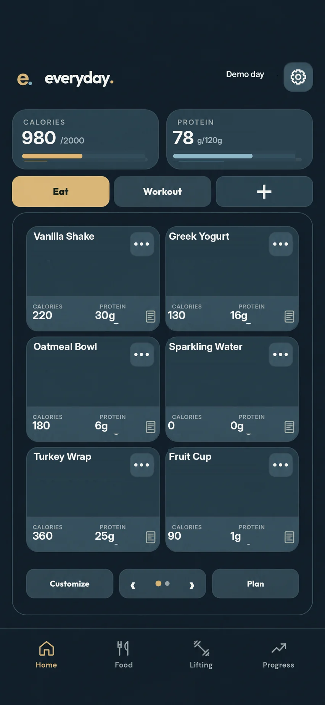

Food, workouts, weigh-ins, and money. I wanted a single place to keep track of all of it.
JavaScriptFirebasePWA
The one I keep coming back to
I use Everyday when I eat, train, or weigh in. That means I notice every extra tap. I've spent a lot of time revisiting food entries, Workout Buddy, routines, and the weight graphs because those are screens I actually depend on.
It's changed along with my habits, and there's always something I want to make faster or easier to read.